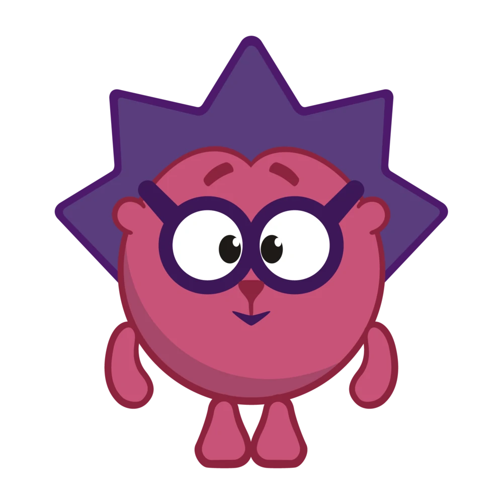
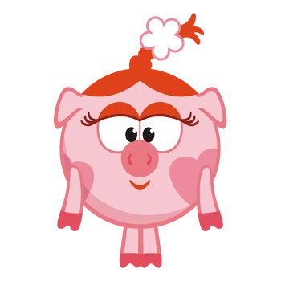
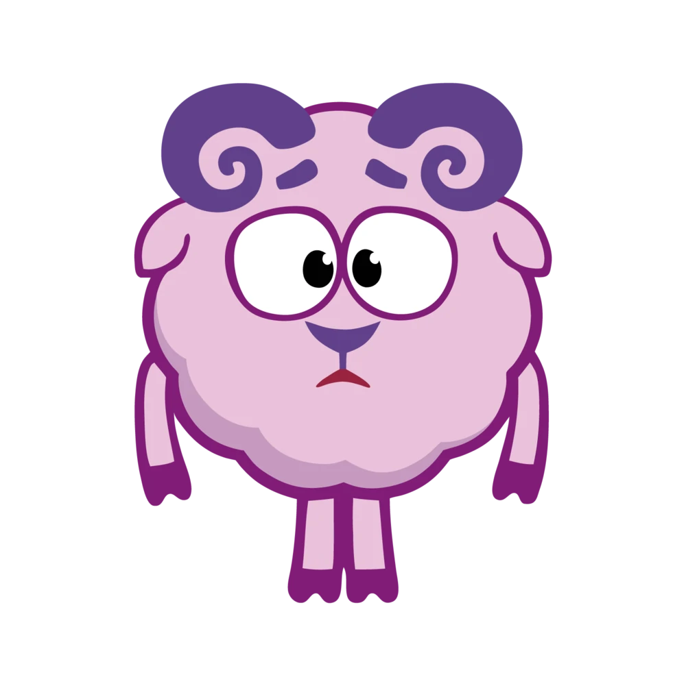
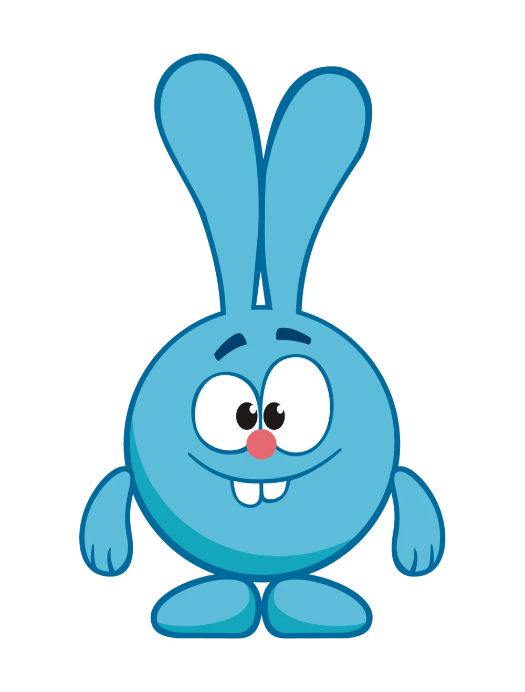
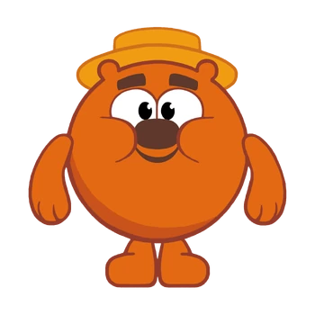

Смотрели ли вы мультфильмы и мультсериалы глазами психолога? А ведь это может оказаться очень увлекательным.
Предллагаю изучить персонажей различных мультиков и разделить их по типам личности, ментальным расстройствам и тд.
Конечно, невозможно поставить диагноз вымышленным героям, однако на их примере можно рассмотреть симптоматику некоторых расстройств.
Обссесивно - компульсивное расстройство (ОКР)

Ёжик добрый и дружелюбный персонаж. Он всегда готов прийти на помощь, когда это понадобится, но для этого ему приходится справляться со множеством фобий. Он боится темноты, ночи в лесу, глубины и высоты. Пожалуй, проще было бы перечислить, чего ёжик не боится. У него есть и достаточно странные страхи. Например, в одной из серий он боится потерять свои иголки и облысеть. В другой серии ёжика уже крайне беспокоит коллекция фантиков от конфет и расположение кактусов в доме. Его до ужаса пугает сама возможность нарушить определённую последовательность. Самой показательной серией становится "Ёжик и здоровье" , где наш герой не может перестать мыть руки. Его постерегают ужасающие мысли о том, что он обязательно заразится и заболеет, если как следует не вымоет руки. Всё это подходит под симптоматику ОКР. То есть мысли о болезнях стоновятся навызчивыми и не уходят из головы, пока он не совершит ритуал - мытье рук. Упорядочивание предметов, а именно фантиков как у ёжика, так же является симптомом этого расстройства.
Расстройство пищевого поведения и дисморфофобия

Нюша стала жертвой самых распространённых стереотипов о женщинах. Она эмоциональная, экспрессивная, капризная и думает лишь о красоте и моде. Мы видим, что она старается соответствовать типичным представлениям о том, какая должна быть женщина. Неудивительно, что у нашей героини можно заметить симптомы расстройства пищевого поведения и дисморфофобии. Так, в серии "Мисс Вселенная" Нюша не проходит отбор на конкурс красоты. Она обнаруживает, что не соответсвует необходимым параметрам, впадает в отчаяние и не может себя принять. В серии "Диета для Нюши" героиня переживает, что у неё нет талии, и решается похудеть, ограничивая себя в еде. Строгие диеты и искаженное восприятие своего тела - симптоматика расстройств пищевого поведения.
Депрессия

Бараш - самый романтичный и ранимый из всех героев. Он много думает о смысле жизни и других экзистенциальных вопросах и часто грустит, например, когда у него нет вдохновения или просто из-за того, что настала осень. В одной серии герой пытается понять какой смысл быть бодрым или умываться. Так мы понимаем, что у нашего героя депрессия. Он не участвует в играх с друзьями и все время хочет побыть в одиночестве, у него недостаточно энергии и сил, ему тяжело придумывать стихи. В одной серии Бараш потерял смысл жизни и для нас это наиболее ярко описывает состояние героя.
Синдром дефицита внимания и гиперактивности (СДВГ)

Крош самый жизнерадостный и активный смешарик. Он гиперактивный, импульсивный, нетерпеливый и нередко подвержен резкой смене настроения. Большуя часть времени он веселый, но, если что-то случится, он резко становится злым и несдержанным. Он довольно обидчивый, эмоционально неустойчивый и с трудом принимает отказ. Всё это даёт нам понять, что у Кроша СДВГ, но герою это не мешает жить, так как он с лёгкостью заводит друзей и общается. Он выглядит самым адаптированным персонажем "Смешариков".
Зависимое поведение

Добрый и отзывчивый Копатыч стал прекрасным другом младшему поколению Смешариков. Он создает впечатление мудрого и опытного персонажа, к которому всегда можно обратиться с советом, омобенно по делам огородным. Но кроме огорода у Копатыча есть еще одна страсть, которая оказывается не такой безобидной, это мёд. Его любовь к сладости кажется нездоровой, ведь он не способен её контролировать. У Копатыча проявляются признаки зависимого поведения. Во-первых, это выраженная потребность в меде. Во-вторых, Копатыч не может контролировать дозировку и понять, когда ему пора остановиться. В серии "Это сладкое слово мёд" Совунье даже прихожится откачивать его после переедания мёда.